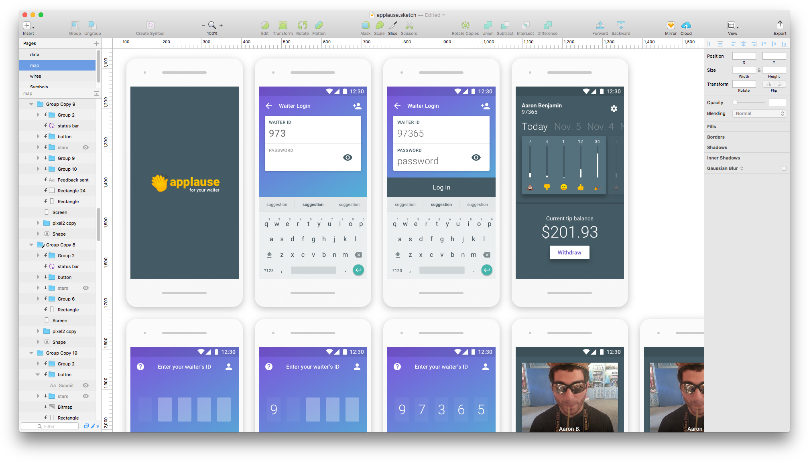
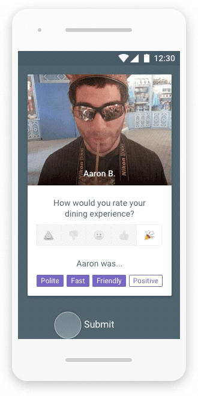

Today, restaurant waiters are left shortchanged because of dated gratuity practices that make the dining experience awkward for both the customer and the waiter.
A study from Cornell University points to a weak relationship between a waiter's performance and the amount a customer leaves for a tip. (Lynn, 2000) The study suggests that a waiter's performance has little influence on their gratuity amount and the customer's tip calculation is often nearly random. This makes for an unsustainable means of making a living for many people in the food industry.
By re-framing the process, Applause aims to modernize the dining experience to better suit the way we think about gratuities. Applause will also provide waiters with a mechanism to measure their performance, collect feedback, and advance their careers.
Day 1 - Deep Dive
The goal of day 1 in this design sprint is to gain domain knowledge. Who is my user? What challenges do they have? What is their environment like? What factors impact them? To answer these questions, I conducted user research, explored existing information about the industry, and identified opportunities for meaningful improvement.
User Research
I gathered qualitative and quantitative data using a survey to learn about the restaurant service industry. This gave me insight into how waitstaff view their own performance, how they compare themselves to others, and how they operate in their work environment. I have also interviewed people actively working in the restaurant industry to get better context and perspective.
Survey results (17 participants):- Gender
- Female: 65%
- Male: 35%
- Age
- 18 to 24: 82%
- 35 to 44: 18%
- How many restaurants have you worked at as a waiter?
- 1: 58%
- 2: 16%
- 5: 16%
- 3: 8%
- Describe the type of restaurant you currently work at...
- Casual dining: 50%
- Fast-food: 33%
- Fine dining: 17%
- How would you rate your overall job performance?
- Above average: 75%
- Top employee: 17%
- Average: 8%
- How often do you discuss your job performance with your boss?
- Weekly: 42%
- Monthly: 33%
- Daily: 25%
- How often does your performance impact how much a customer tips? (Scale of 1 - 10 from Never to Always)
- Average: 8.00 (Frequently)
- What words would you use to describe a good waiter? (Free-form)
- Quick: 58%
- Friendly: 50%
- Polite: 47%
- Positive: 33%
- What words would a customer use to describe a good waiter?
- Friendly: 50%
- Attentive: 50%
- Fast: 25%
- When applying for a new job at a restaurant, what best speaks to your previous experience as a waiter? (Multiple choice)
- References: 92%
- Resume: 83%
- Letter of recommendation: 33%
- Written performance review: 33%
- Other: 8%
- Do you think customers would tip more before or after seeing the bill?
- Before: 67%
- After: 33%
- Is there anything else you'd like to share about what it's like being a waiter?
- Not everyone can do it, good money, easy job
- Be super nice, I get a lot of tips and compliments from that
- It is a fun way to be paid to be social
- It’s a tedious job but at the end of the day you get to walk shine with tips in your pocket.
- It’s hard to find good ones honestly
- Being a waiter isn't for everyone. You run into all kinds of people on the job. You'll meet some of the nicest people as well as some of the rudest. If you handle yourself well in both situations waiting tables is a breeze.
- It’s often a very fast paced job that typically entails a great deal of multi-tasking . It can be a great test of both mental and physical endurance. There are also times when business is slow and it becomes a great test of patience. It requires evolved social skills and an ability to work efficiently under stress; however, it’s also a great way to learn and develop those traits.
- Feedback often comes from customers verbally.
- Most customers tip about 20% of the meal cost for "above average" service. (If they can accurately calculate it)
- Simply filling orders on-time can result in under-tipping or no tip at all.
- Tips at or above 20% seem random and not based on service quality. Sometimes customers will leave more than a 50% tip on counter service for to-go drinks.
- The customers mood largely contributes the feedback and tip after service. Part of the job is improving the customers mood.
- Settling arguments about "proper tip amounts" among groups of people is a common occurrence. It feels really awkward making a suggestion for gratuity directly to a customer.
- Sometimes feedback goes to the manager and the waiter will hear about it weeks later or not at all.
- It's not common to get a raise based on performance. Usually those come with time or becoming a manager.
- When applying to a new job as a waiter, references from peers best represent previous performance.
Industry Considerations
To better understand the user's environment and shape use-cases, I’ve investigated how a waiter's performance is measured and used in different scenarios. I have also analyzed job listings from multiple employers to help define the criteria for a waiter's service quality.
Tips
The purpose of tips is to reward waiters for exceptional service. Waiters expect better performance to yield higher tips. However, that's rarely the case. (Lynn, 2000)
Notes:- 67% of waiters surveyed said customers are more likely to leave larger tips before seeing the bill.
- 72% of surveyed waiters believe their performance frequently impacts the amount of their gratuities.
- Studies show that after seeing the bill, a customer is more likely to base their tip on the cost of the meal with little consideration of the dining experience. (Bujisic, 2013)
Employee performance reviews
Employee performance review frequency varies from monthly reviews to annual reviews. The purpose of these reviews is to assess each employee's performance and provide coaching as needed. Some businesses have incentive programs based on performance.
Notes:- Interviewed waiters said their main source of feedback comes from customers.
- Managers will sometimes reference customer comments during employee reviews.
- Employee performance doesn't usually impact compensation as much as tenure and title.
Job Seeking
A waiter's performance record comes into play when applying for a new job to give potential employers a frame of reference for their skills.
Notes:- Waiters are likely to use a resume and references from co-workers to best represent them when job-seeking.
Day 2 - Analysis
The main focus of day 2 to is to analyze the research and distill the information down to actionable insights. I used pivot tables to compare data sets from the survey results, identified patterns in the interviews, and highlighted correlations and deltas between perceived outcomes and what the data suggests. Using the insights, I began to shape use-cases to design for.
Insights
- There's a gap in the perceived impact and the measurable impact of waiter performance on gratuities.
- Current gratuity customs make for a poor dining experience because of the ambiguity and awkwardness of the process.
- A waiter's performance is inconsistently measured depending on their employer, source of the feedback, and the customer expectations.
- Job seeking is more effective with documented feedback from peers and customers.
- It's common for waiters to work at multiple restaurants, sometimes at the same time.
- The best criteria for evaluating waiter performance is: Speed, friendliness, positive attitude, politeness, and attentiveness.
Assumptions
- Better juxtaposition between performance evaluation the gratuity process should strengthen the relationship between service quality and tip amounts.
- A guided evaluation of the service and recommended gratuity will help remove ambiguity and friction from giving feedback and gratuities.
- Making the feedback and gratuity process independent of employers will give waiters more ownership of their careers.
Use-cases
- Case #1 - Customer leaves positive feedback
- Actors:
- Waiter
- Happy customer
- Scenario:
- A customer finishing their meal at a restaurant thinks the service was excellent and wants to leave feedback for the waiter along with a gratuity to show their appreciation.
- Solution:
- The waiter brings a bill to the table that includes an invitation to give the waiter feedback on a mobile app that they can download or access from the web.
- The customer enters the URL found in the invitation that takes them to the waiter's scorecard.
- The customer completes a short survey about their visit and a gratuity is suggested. The customer can opt to leave a gratuity in the app or put the suggested gratuity on the bill the traditional way.
- The waiter receives a notification about the new feedback via email.
- Case #2
- Actors:
- Waiter
- Aggravated customer
- Scenario:
- A customer finishing their meal at a restaurant thinks the service was poor and wants to leave feedback for the waiter.
- Solution:
- The waiter brings a bill to the table that includes an invitation to give the waiter feedback on a mobile app that they can download or access from the web.
- The customer enters the URL found in the invitation that takes them to the waiter's scorecard.
- The customer completes a short survey about their visit and a below average gratuity is suggested. The customer can opt to leave a gratuity in the app or put the suggested gratuity on the bill the traditional way.
- The waiter receives a notification about the new feedback via email.
- Case #3 - Employee references feedback while job seeking
- Actors:
- Waiter
- Potential employer
- Scenario:
- A waiter applies for a job at a new restaurant.
- Solution:
- The waiter sends his resume and link to their Applause profile to a potential employer.
- The employer reviews the feedback and rating of the applicant.
- The employer is able to make an informed hiring decision based on recent feedback from customers and previous co-workers.
Considerations
- Low/no signal at a restaurant may make it difficult to use the app
- Customers will be time-sensitive
- Waiters should have full control over their feedback and tips
Goals
Goal #1: My initial research suggested a disconnect between the perceived relationship between gratuities and performance and the actual relationship. I think the relationship can be made stronger by removing distracting variables and putting the action of giving a gratuity into context. Waiters will receive gratuities that align with their performance and actionable feedback from customers.
Goal #2: In many cases, feedback and gratuities are processed through a waiter's employer. By accepting both independently, waiters will have more ownership and control of their career. Employees will be able to share and discuss their customer feedback with their current and potential employers.
Day 3 - Explorations
On day 3, I worked on developing flows that support my use-cases and wireframed the UI.
Flow
Using the use-cases as a guideline for what the user needs, I began outlining the screens needed to address them and how visualized how they fit together.
A customer needs to:- Be able to identify their waiter in the app
- Rate their waiter
- Quickly leave a tip
- View the feedback they receive from customers
- Identify actionable trends in their ratings
- See the balance of their tips
- Be able to transfer their tip balance to a bank account
Wireframes
After the screens were identified, I pieced together the UI elements needed on each screen for the user to complete their intended task.
Day 4 - Build
Hurray! 🎉 It's day 4. That means I have enough domain knowledge, user context, and a framework to starting building on. On day 4, I design a visual expression for the app to make using it intuitive and engaging. I also choreographed interactions to help manage users' attention as they move through the experience.
Visual Design
Each element on the screen is a either an actor or a prop used to communicate to the audience. The audience needs to easily identify each element and be able to easily interact with the performance for a good experience. Actors are dynamic components that can communicate data or instructions to the audience. Sometimes an actor will use props to help visualize a message or the audience will use props to communicate back to actors on stage.

Hub
The main screen acts as the hub for the app. The title is centered at the top with links to pivot screens on the left and right. The primary action is featured center stage.
Pivot
Pivot screens branch off of the hub. These screens have a single focus and lead to flows.
Flow
When a user enters a flow, the screen background will adopt the color of the selected button and the primary controls will appear at the bottom of the screen.
Choreography
How an app moves and transitions helps the user understand the context of each actor. I used motion to help build relationships from scene to scene so that the flow of the experience is easy to follow.
Find scorecard
When a diner enters their waiter's ID and taps "Give feedback", the button will expand to cover the screen and the the scorecard will enter the stage from the left. By transitioning this way, the user has context for the scorecard.

Rating selection
After a customer selects a rating for their waiter, the submit button slides onto the screen with a subtle spring animation to draw attention to the next step.
Submit feedback
The transition communicates back to the user that their feedback has been submitted before asking for input on the next step.

Pivot transition
When the screen transitions away from a main screen to a secondary action, the new screen enters from the right and shifts the current screen to the left so that the user stays oriented to where they are in the app.

Dashboard
The dashboard shows waiter's their feedback scores for the day. They can swipe to pan through time and review their history.

Day 5 - Reflect
Now that I have a tangible product, it's time to reflect on where it started, who it's for, and how it measures up to my goals.
FAQs
As I've gotten feedback on product features, designs, and concepts, questions came up along the way that helped shape the design of the product.
Why don't patrons have to register an account?The primary consumer of any collected data from the app is the waiter. For the app to be truly easy to use and a better alternative to the available options, the experience has to be frictionless. Also, I want to be sure a customer isn't giving out any more personal information than they would if they left a cash tip.
On the rating card, why use emojis instead of the traditional 5-star expression of a likert scale?
The purpose of the feedback mechanism is to capture a customer's feelings or attitude after their dining experience. In this context. I think it's easier for users to connect their feelings to a visual metaphor rather than assigning numerical value to an experience.
Why use numerical IDs for waiters rather than a username or QR code?
I chose to use ID numbers because they can easily be written onto the bill by hand or printed. A keypad is easier to use in more conditions than QR codes, localization, search, or other methods of identifying an individual.
Is meal cost a factor in the gratuity recommendation?
No. This concept focuses exclusively on performance. The recommended tip starts from a base amount set by the waiter and goes up or down based on the scorecard rating input by the customer.
Does a customer have to download the app to use it?No. A customer can also give a rating using the web version of Applause by visiting the waiter's url. ex: applause.com/97365
Goal check
Goal #1 is to better connect waiter's tips to their performance. By having customers give feedback at the end of their meal and then a gratuity, the tip is being framed in the context of the waiter's performance.
Goal #2 is give waiter's more ownership of their career. By being able to manager their feedback and track their progress, a waiter can more independently grow their career.
Future opportunities
TaxesManaging your own tips means managing your own taxes. There's an opportunity to integrate that calculation into the app.
Skip the tip
The purpose of the app is to separate the tipping process from the restaurant bill and frame it in the context of giving feedback. However, some users may want to give their tip using the traditional methods and use the app for only feedback. In that case, a "Skip" button on the tip screen might make sense.
Advanced settings
Giving the waiter more control over the feedback question, performance attributes, and tipping might make the app more flexible to varying needs.
Table-top kiosks
Seamlessly integrating the process into the dining experience would cut out the need to use a personal device to give feedback.
Analytics
A more robust analytics dashboard for feedback could allow waiter's to visualize and analyze their data at a deeper level. Employers might also find this useful to examine their staff's performance as a whole using anonymous data submissions from their employees' accounts.